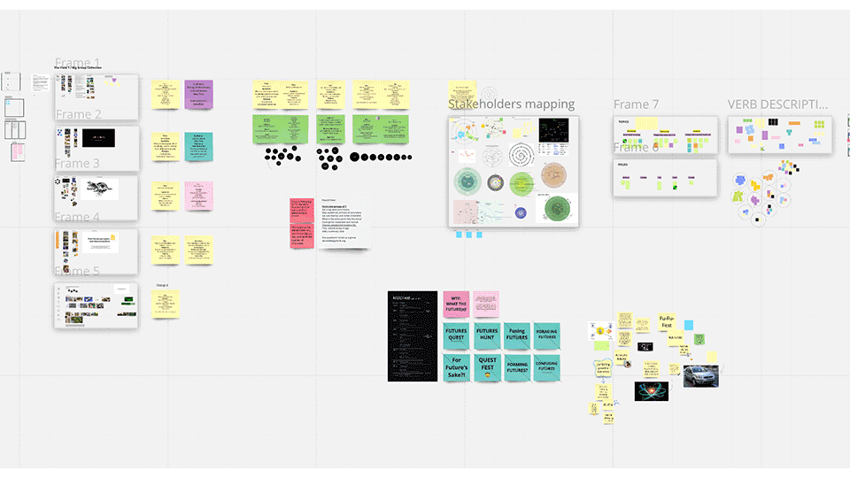
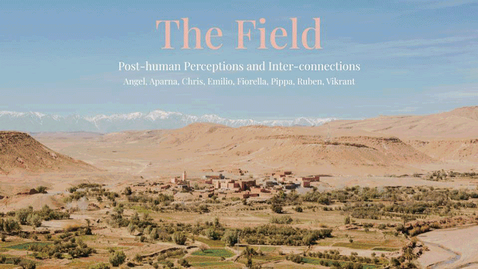
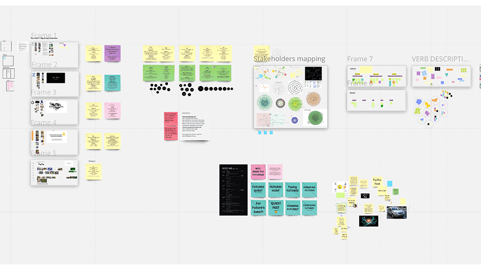
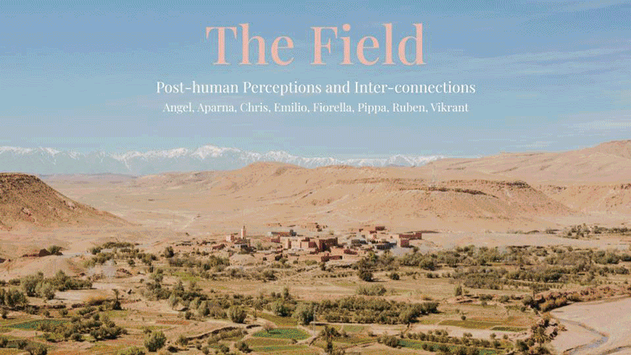

🗓 2022
Here you can see our Miro board which contains the process and content for this exercise.

Group presentation here

The Field
In this session, we worked with curator and creative director,Daniel Charny, to explore and curate our "fields" of practice. Starting with a quick exercise in curating images that speak to our projects (both literal and abstract), we continued to build series of curated sets in each session. We started this process quickly and continued iterating and practicing with more collaborators, taking more time for each round. These exercises in curation helped build our muscle for the final day, in which we planned for the curation of the MDEFest. We made a series of decisions very quickly, gathering ourselves into groups with similar topics, assigning themes, voting on titles, so that we can come upon decisions for the festival.Here you can see our Miro board which contains the process and content for this exercise.

Group presentation here
